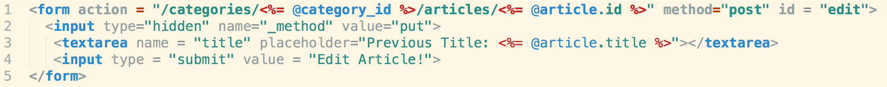
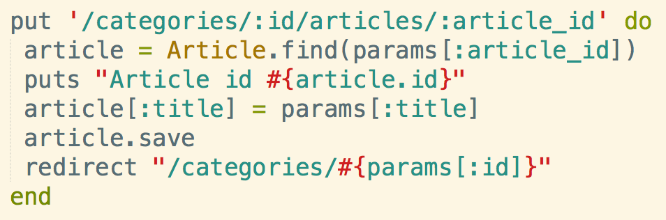

Using Put Routes
Web Browsers can't use put or delete, but you can definitely use get or post routes. The way to work around these issues in Sinatra is to setup a post form on your "views" erb file with a hidden input value set to "put"
Here is the "view" erb file with hidden "put" input.
That corresponds to the view controller. Notice view controller is a put route. Still need to save the ruby object as it is pulled out of the database to be manipulated.
